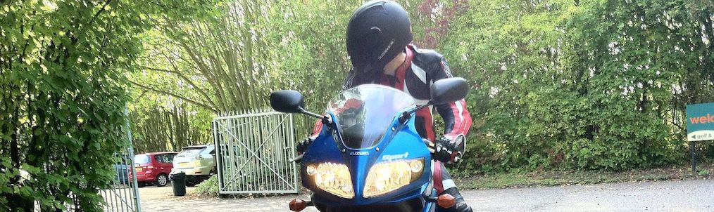

This is a home for various data science projects, where I try to analyse some interesting public datasets, build pretty and informative graphics and share the R code.
I'm Ben Moore, a computational biology / bioinformatics PhD student at the University of Edinburgh, UK. I picked up the R programming language during my MSc at Imperial College London and use it constantly in my day-job, along with some Python. For fun I sometimes apply these tools to interesting-looking datasets that are lying around the web, and try to tell their stories through well-designed data visualisations.
Within R, I make extensive use of the "Hadley-verse" of packages, especially ggplot2 and dplyr. Increasingly I'm also using packages from the Ramnath-verse, including Slidify, for generating HTML5 presentations from RMarkdown, and rCharts to build interactive JS graphics. The rOpenSci project has greased the wheels of several handy APIs, amongst other things. My R IDE of choice is RStudio.
Due to the fact I've benefited so much from these free and open-source tools, I think it's only fair to make any and all analysis code public. Mine's on github — if you make something cool based on anything there I'd be interested in hearing about it!
Personally, I've not taken any MOOC course or even read
The R Book,
I think the best way to learn is by doing. Find an interesting dataset and start
hacking away; Google, StackOverflow, Github discussions are your friends. The R help
system is only a ? away.
A book I did enjoy and one that embodies this approach is Machine Learning for Hackers whose worked examples are done entirely in R. I've also heard great things about the ggplot2 book but if you just want to get going with the package, the docs will be more up-to-date.
My other interests include motorbikes, guitars, reading and games. My academic publications are listed on Google scholar, though it's not much of a list yet. I'm a Wikipedian, and semi-active in places like HackerNews and Reddit, but twitter or email are the best ways to get in touch.
